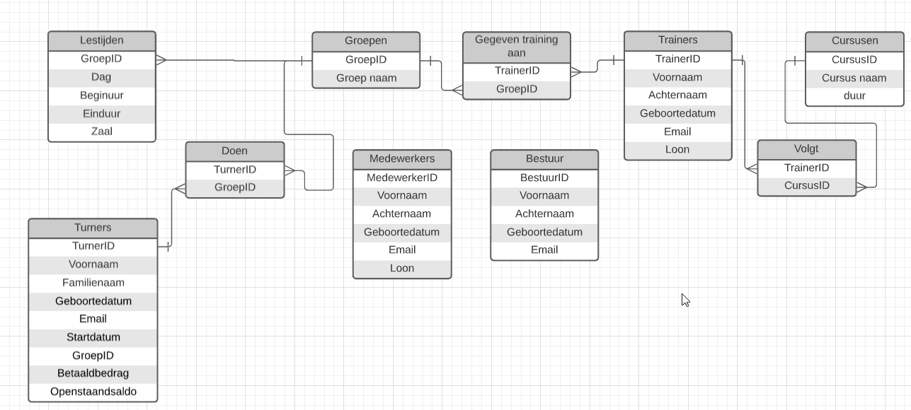

Ik heb besloten om een database op te stellen voor de the sky is the limit (tsitl). Dit is een sport club in Sint-Antonius Zoersel.
Ze gaan deze database gebruiken om te zien welke turner nog moet betalen. Welke trainer/medewerken betaalt krijgt en om te zien dat er niet te veel groepen tijdens het zelfde moment in de zalen zijn.
Ik ben begonnen met het ERD-model in Lucid Chart op te stellen. Ik heb tijdens het opmaken van het model al rekening gehouden met het normaliseren van een database. Hier ziet u een het ERD-model. In Lucid Chart kon ik de optionalitijden niet invullen.
Ik heb dit ERD-model na gekeken of er proces gegevens en samengestelde in staan. Daarna heb ik gekeken of er repeterende groepen zijn t.o.v. de primaire sleutel. Daarna heb ik bij de samengestelde sleutels gezocht naar velden die alleen afhangen van een deel van een samengestelde sleutel. Als laatste normaal vorm heb ik gezocht naar velden die alleen afhangen van een ander niet-sleutelveld.